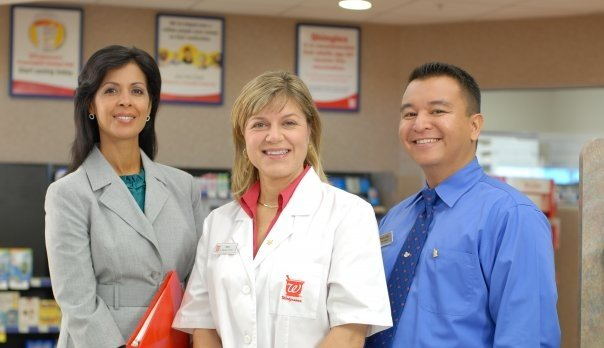

Paging Dr. Townsend
Greetings Fans,
Over a year ago, I mentioned that Carol had taken a turn in the medical profession as she was cast in a print campaign for Walgreen's Pharmacy. In the meantime, Carol has spent a lot more time in the examining room, acting as a Standardized Patient for Kaplan Medical. But a year ago, she was your friendly neighborhood pharmacist. Due to a slight email mixup, we didn't get to see the results of her work until today:

What a trustworthy and competent looking pharmacist. I would definitely buy my drugs from her!
Originally published on the Blogspot site